2. While loops#
De volgende code tekent een vierkant met Python turtle:
1import turtle
2
3tony = turtle.Turtle()
4
5tony.fd(100)
6tony.lt(90)
7tony.fd(100)
8tony.lt(90)
9tony.fd(100)
10tony.lt(90)
11tony.fd(100)
12tony.lt(90)
De regels 5 t/m 11 bevatten veel herhaling. Het zou beter zijn als we tegen Python konden zeggen: ‘voer de regels 5 en 6 vier keer achter elkaar uit.’ Dat scheelt typwerk en het maakt de code overzichtelijker.
Wat leer je in dit hoofdstuk
Wat zijn vergelijkingsoperatoren en hoe werken ze.
Hoe laat je code meermaals uitvoeren met een while loop (Nederlands: while lus).
Hoe kun je in Mu editor code stap voor stap laten uitvoeren.
Hoe geef je in Python met indentation (Nederlands: inspringing) aan tot welk blok een coderegel behoort.
Waarom gebruiken we voor inspringen de Tab toets.
2.1. Vergelijkingsoperatoren#
Voordat we de while loop introduceren, moet je weten wat een vergelijkingsoperator is. Het begrip operator ben je eerder tegengekomen in het hoofdstuk /ch01_arithmetic/ch01_01_arithmetic bij de behandeling van de rekenkundige operatoren: de symbolen die je gebruikt voor berekeningen zoals +, * en //. Vergelijkingsoperatoren zijn symbolen die je gebruikt om twee waarden met elkaar te vergelijken. We hebben er zes:
Operator |
Naam |
Voorbeeld |
Uitkomst |
|---|---|---|---|
|
Gelijk aan |
|
|
|
Niet gelijk aan |
|
|
|
Groter dan |
|
|
|
Kleiner dan |
|
|
|
Groter of gelijk aan |
|
|
|
Kleiner of gelijk aan |
|
|
Je kunt de werking van de vergelijkingsoperatoren testen in de CLI:
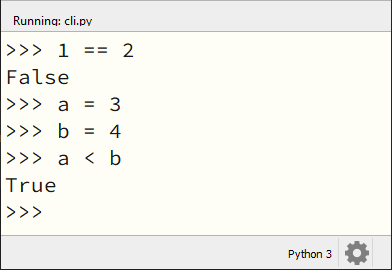
Let op het verschil tussen de assignment operator = en de vergelijkingsoperator ==. Deze twee moet je niet met elkaar verwarren.
2.2. Code herhalen#
Maak in Mu editor een nieuw bestand, kopieer en plak de onderstaande code erin en sla het op als turtle_while.py.
1import turtle
2
3tony = turtle.Turtle()
4
5zijde = 0
6while zijde < 4:
7 tony.fd(100)
8 tony.lt(90)
9 zijde = zijde + 1
Run de code om het resultaat te bekijken. Snap je hoe deze code werkt? Het Python keyword while in regel 6 kun je vertalen als terwijl of zolang. En de vergelijkingsoperator < symbool betekent kleiner dan. Je kunt deze regel dus lezen als ‘Zolang de waarde van zijde kleiner is dan 4:’. Let ook op de dubbele punt : aan het einde van deze regel.
Schematisch weergegeven doet de code het volgende:
Eerst krijgt de variabele zijde de waarde 0. Vervolgens checkt Python of zijde kleiner is dan 4. Als dat zo is, wordt tony vooruit gestuurd en gedraaid. Daarna wordt de waarde van zijde met 1 opgehoogd. We springen terug naar regel 6 en Python checkt weer of zijde kleiner is dan 4.
We gebruiken de variabele zijde in dit voorbeeld als een teller variabele. De waarde ervan geeft aan hoeveel zijden er tot op dat moment zijn getekend. Doordat we de waarde van zijde na elke tekenactie ophogen, zal de check in regel 6 op een zeker moment False zijn. De uitvoering van de loop stopt, en in dit geval is het programma dan ook afgelopen.
2.3. Debugging mode#
Mu editor biedt de mogelijkheid om de uitvoering van een programma stap voor stap te volgen. Je kunt op die manier goed zien hoe de while loop werkt.
Klik op regel 6 in turtle_while.py met de muiscursor in het grijze stukje rechts naast het regelnummer 6 om een zogenoemd breakpoint te plaatsen.
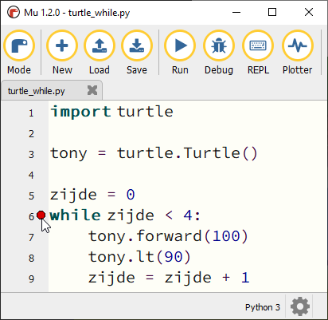
Klik daarna op Debug bovenin de knoppenbalk.
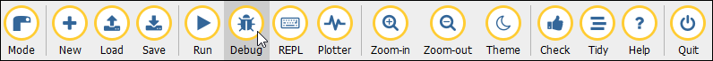
Nu start Mu editor de uitvoering van de code, maar pauzeert op regel 6, waar je zojuist het breakpoint plaatste. Gebruik de knop Step over om de code vanaf het breakpoint telkens een stapje verder uit te voeren. Houd daarbij in de gaten wat er in de turtle tekening gebeurt, maar ook wat de waarde van de variabele zijde is. Die waarde wordt in Mu editor aan de rechterkant getoond.
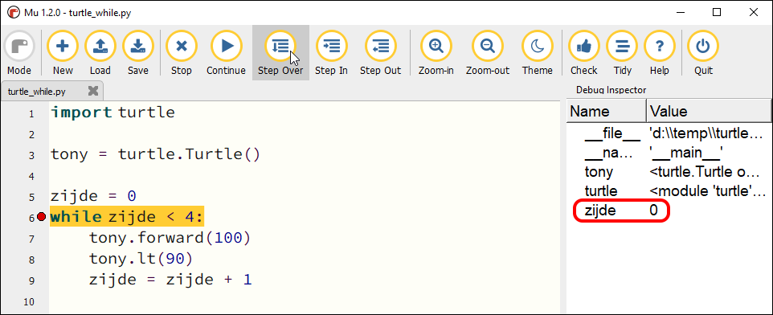
Begrijp je nu hoe de while loop werkt? Klik op Stop om het debuggen te stoppen.
In de volgende opdrachten ga je je eigen while loops schrijven. Je zult merken dat je met loops mooie patronen kunt tekenen.
2.4. Indentation#
Kijk nog eens goed naar de regels 7, 8 en 9 van turtle_while.py. Deze regels zijn ingesprongen. Dat is belangrijk! Daardoor weet Python dat die drie regels binnen de ‘while lus’ vallen. In Python bepaalt de inspringing (Engels: indentation) van een coderegel tot welk blok die regel behoort. Kopieer de onderstaande code naar Mu editor (in een bestand hello_while.py) om te zien hoe dat werkt:
1i = 0
2while i < 3:
3 print('Deze zin wordt drie keer geprint.')
4 print('En deze zin valt ook binnen de while lus.')
5 i = i + 1
6print('Maar deze zin wordt slechts één keer geprint.')
De regels 3, 4 en 5 van hello_while.py zijn ingesprongen: ze worden voorafgegaan door 4 spaties. Daardoor weet Python dat die regels één blokje vormen binnen de while lus.
Regel 6 is niet ingesprongen en hoort daardoor niet bij het blokje dat wordt herhaald.
Bestudeer nu de volgende code eens, nadat je hem in Mu editor hebt uitgevoerd. Je ziet hier een while lus bínnen een andere while lus.
1import turtle
2
3tony = turtle.Turtle()
4
5vierkant = 0
6while vierkant < 3:
7 zijde = 0
8 while zijde < 4:
9 tony.fd(100) # Deze regels
10 tony.lt(90) # vallen binnen
11 zijde = zijde + 1 # de 2e while lus
12 tony.pu()
13 tony.lt(120)
14 tony.fd(100)
15 tony.pd()
16 vierkant = vierkant + 1
De regels 7 t/m 16 in deze code vallen binnen de while lus die begint op regel 6. Maar in dat blok begint op regel 8 een tweede while lus, die de regels 9 t/m 11 herhaalt. Let op de inspringing van regel 12: die valt niet meer onder de tweede while lus.
Wanneer je in Mu editor op Enter drukt nadat je regel 6 hebt getypt, springt de volgende regel automatisch in. Wil je handmatig een regel laten inspringen, dan kun je daarvoor de Tab toets gebruiken (links naast de Q).
Spaties of tabs?
Gebruik voor het inspringen van coderegels nooit de spatiebalk! Ten eerste is het heel onhandig om telkens spaties te moeten tellen, en ten tweede krijg je sneller indentation errors.
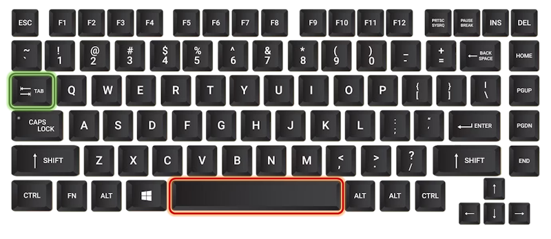
Met de Tab toets kun je in één keer een grotere inspringing maken. Ook is het mogelijk in Mu editor een aantal regels code te selecteren en vervolgens op Tab te drukken om die regels tegelijkertijd te laten inspringen; probeer het maar eens. Om ze weer te laten terugspringen gebruik je Shift + Tab.
2.5. Verschillende voorwaarden#
In de voorgaande voorbeelden gebruikten we in de voorwaarde van de while loop telkens een teller variabele, oftewel een integer. Maar je kunt in de voorwaarde van een while loop ook andere datatypes gebruiken, zoals een string:
1name = ''
2while name != 'je naam':
3 name = input('Typ je naam: ')
4
5print('Dankjewel!')
Probeer dit programma maar eens uit. Het is afkomstig uit het boek Automate the Boring Stuff van Al Sweigart. Daarin heet dit programma An Annoying while Loop. Kun je bedenken waarom?
Hieronder zi je het stroomdiagram dat hoort bij de code. Er wordt nu geen integer variabele gebruikt voor de while loop, maar een string naam. Zolang de waarde van naam ongelijk is aan 'je naam' blijft de loop zich herhalen.
Je kunt in de voorwaarde van de while loop variabelen ook helemaal achterwege laten, zoals in het volgende voorbeeld:
1while True:
2 print('Dit stopt niet meer!')
Met while True: creëer je een oneindige loop. Er zijn wel mogelijkheden om daar weer uit te ontsnappen, maar die bewaren we voor een ander moment. Uiteraard wil je liever niet dat je programma in een loop blijft hangen waar de gebruiker nooit meer uitkomt. Let dus altijd goed op wanneer je een while loop programmeert.
2.6. Opdrachten#
Opdracht 01
Maak een nieuw bestand in Mu editor en sla het op als driehoeken.py. Kopieer de onderstaande code van turtle_while.py naar je nieuwe bestand.
1# While loops - opdracht 01
2
3import turtle
4
5tony = turtle.Turtle()
6
7zijde = 0
8while zijde < 4:
9 tony.fd(100)
10 tony.lt(90)
11 zijde = zijde + 1
Pas de code zodanig aan dat in plaats van een vierkant een driehoek met zijden van 100 pixels wordt getekend, uiteraard met gebruikmaking van een while loop. Na het tekenen van een zijde moet de turtle telkens 120 graden draaien.
Oplossing
1# While loops - opdracht 01
2
3import turtle
4
5tony = turtle.Turtle()
6
7zijde = 0
8while zijde < 3:
9 tony.fd(100)
10 tony.lt(120)
11 zijde = zijde + 1
Opdracht 02
Breid de code in driehoeken.py van opdracht 01 uit, opdat met behulp van een while loop binnen een andere while loop vier driehoeken op een rij worden getekend zoals hieronder afgebeeld.
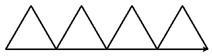
Hint
Gebruik voor je programma de volgende structuur:
# While loops - opdracht 02
import turtle
tony = turtle.Turtle()
driehoek = 0
while driehoek < 4:
zijde = 0
while zijde < 3:
...
...
...
...
...
Oplossing
1# While loops - opdracht 02
2
3import turtle
4
5tony = turtle.Turtle()
6
7driehoek = 0
8while driehoek < 4:
9 zijde = 0
10 while zijde < 3:
11 tony.fd(100)
12 tony.lt(120)
13 zijde = zijde + 1
14 tony.fd(100)
15 driehoek = driehoek + 1
Opdracht 03
Kopieer de code van turtle_while.py naar een nieuw bestand dat je opslaat als bloem.py. Breid de code zodanig uit dat met behulp van een while loop binnen een andere while loop 20 vierkanten worden getekend, waarbij elk vierkant 18 graden gedraaid is ten opzicht van het vorige. Dit moet de volgende figuur opleveren:
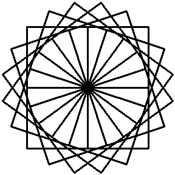
Hint
Je programma bestaat uit twee while loops, waarvan de binnenste het tekenen van één vierkant verzorgt. Na het tekenen van een vierkant moet de turtle 18 graden linksom draaien.
...
while ...:
# Deze while loop zorgt voor 20 herhalingen.
...
while ...:
# Deze while loop zorgt voor één vierkant.
...
...
tony.lt(18) # Draai tony 18 graden linksom
...
Opdracht 04
Maak een nieuw bestand in Mu editor, kopieer onderstaande de code erin en sla het op onder de naam turtle_dots.py.
1# While loops - opdracht 04
2
3import turtle
4
5tony = turtle.Turtle()
6tony.hideturtle()
7tony.speed(0)
8
9rij = 0
10while ...:
11 kolom = 0
12 while ...:
13 tony.dot(20, 'red')
14 ...
15 ...
16 ...
17 ...
18 ...
19 ...
20 ...
Vervang de puntjes in de gemarkeerde regels door code die ervoor zorgt dat een rooster van 10 bij 10 rode puntjes wordt getekend.
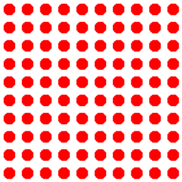
Opdracht 05
Schrijf een programma dat de onderstaande figuur tekent. Je mag zelf de kleur en de pendikte bepalen, maar voor het daadwerkelijke tekenen mag je maximaal 5 regels code gebruiken.
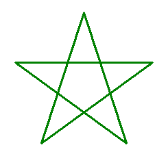
Hint
Vind je het lastig om de draaiingshoek te bepalen? Bedenk dan dat de turtle in totaal 2 keer volledig ronddraait (dus de totale draaiingshoek is 2 * 360° = 720°) en dat die volledige draai over 5 stappen wordt verdeeld.
Opdracht 06
We willen de turtle een regelmatige veelhoek laten tekenen. Dat is een veelhoek waarvan alle zijden even lang zijn en de hoeken even groot.
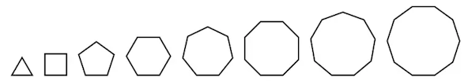
Om het programma flexibel te maken, gaan we een variabele aantal_hoeken gebruiken, die het aantal hoeken van de veelhoek aangeeft. Als bijvoorbeeld aantal_hoeken = 3 dan moet een driehoek worden getekend en als aantal_hoeken = 8 een achthoek.
Kopieer onderstaande code in een nieuw bestand, dat je opslaat als turtle_veelhoeken.py.
1# While loops - opdracht 06
2
3import turtle
4
5tony = turtle.Turtle()
6
7aantal_hoeken = 5
8draaiingshoek = ...
9
10hoek = ...
11while ...:
12 tony.fd(100)
13 tony.lt(draaiingshoek)
14 hoek = hoek + 1
Op regels 8, 10 en 11 ontbreekt code. Vul zelf in wat op de puntjes moet staan, opdat het programma een regelmatige vijfhoek tekent. De waarde van draaiingshoek is afhankelijk van aantal_hoeken, dus op de puntjes in regel 8 moet een berekening met aantal_hoeken komen.
Test je programma door in regel 7 voor aantal_hoeken verschillende waarden te kiezen. Als je bijvoorbeeld aantal_hoeken = 7 kiest, zou een regelmatige zevenhoek moeten worden getekend.
Gelukt? Breid dan je programma uit met een input() aanroep waarmee aan de gebruiker wordt gevraagd hoeveel hoeken de veelhoek moet hebben en sla het antwoord van de gebruiker op in aantal_hoeken.
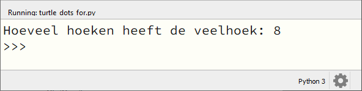
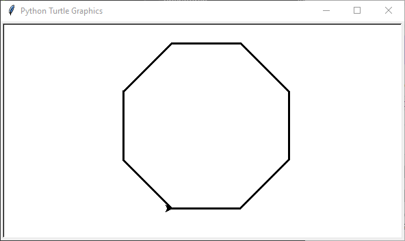